A plain-language walkthrough of the full journey of a research paper —
from account creation to publication — with pictures of each stage.
CCRI Manuscript Management System (MMS) · For authors, editors, reviewers,
and production staff · Written for non-technical readers
What you will learn
Who uses the system (the four main roles)
The big picture — one paper’s journey
Step-by-step: create an account and sign in
Author submits a paper
Editor checks the paper (screening)
Editor invites reviewers
Reviewers send their reports
Editor makes a decision
Author responds / revises if asked
Production prepares the final article
1. Who uses MMS?
Think of MMS as a shared office for a scientific journal. Each person has
their own desk (dashboard). You only see the work that belongs to your job.
AuthorWrites and submits the paper, uploads revisions, and approves proofs.
EditorChecks new papers, invites reviewers, and records Accept / Revision / Reject.
ReviewerReads invited papers and writes confidential recommendations and comments.
Production EditorPrepares proofs after acceptance and publishes the finished article.
Important: When you create an account you choose one role.
An Author cannot open the Editor queue, and a Reviewer cannot submit papers
as an Author. This keeps responsibilities clear and secure.
2. The big picture
Every manuscript follows the same path. Some papers skip revision and go
straight to production; others need formatting fixes or a revised version
before they can continue.
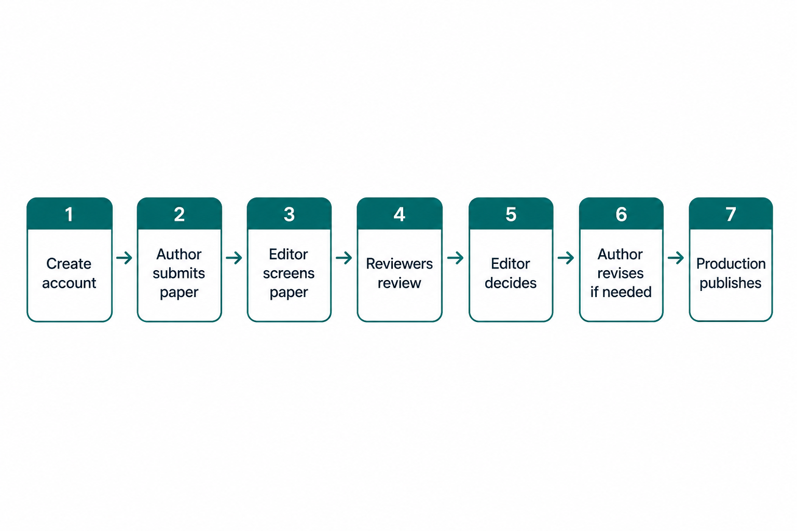
Figure 1 — End-to-end journey of a manuscript in MMS
Create account — choose your role and sign in.
Author submits — title, abstract, authors, and files.
Editor screens — pass, ask for formatting, or desk reject.
Reviewers review — invited experts send reports.
Editor decides — accept, ask for revision, or reject.
Author revises — only if the editor asks for changes.
Production publishes — proof, approval, DOI / publish.
3. Create an account and sign in
Everyone starts on the same two screens: Create account and
Sign in. After sign-in, MMS opens the dashboard that matches your role.
Create account
Choose whether you are an Author, Reviewer, Editor, or Production Editor.
Enter your name, email, institution, and password.
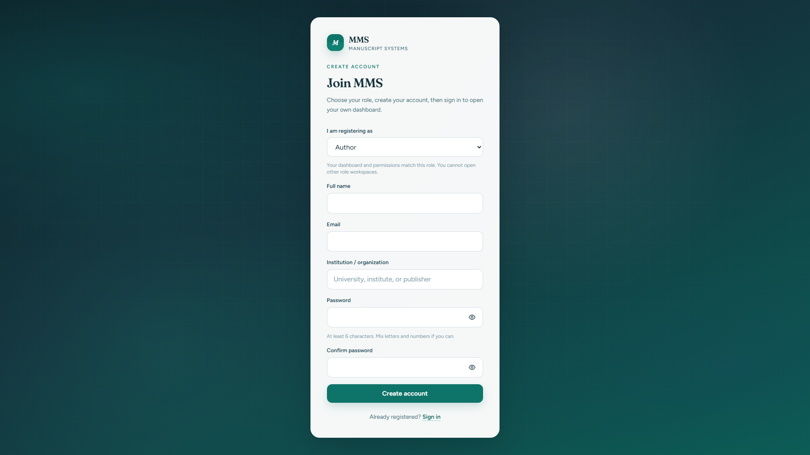
Figure 2 — Create account screen (real MMS page)
Sign in
Use the same email and password. The left panel explains that MMS covers
submission, peer review, production, and publication in one place.
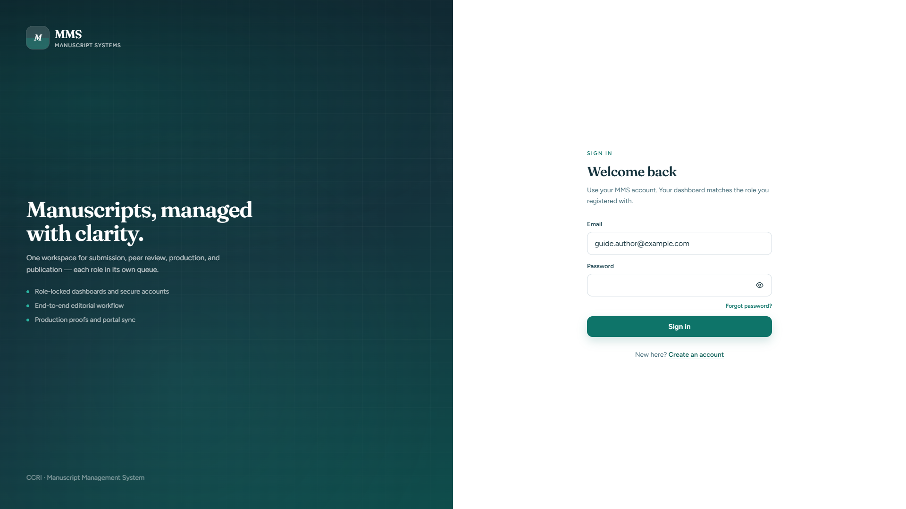
Figure 3 — Sign-in screen (real MMS page)
4. Author submits a paper
After signing in as an Author, you land on Your manuscripts.
From here you can start a new submission and track every paper you already sent.
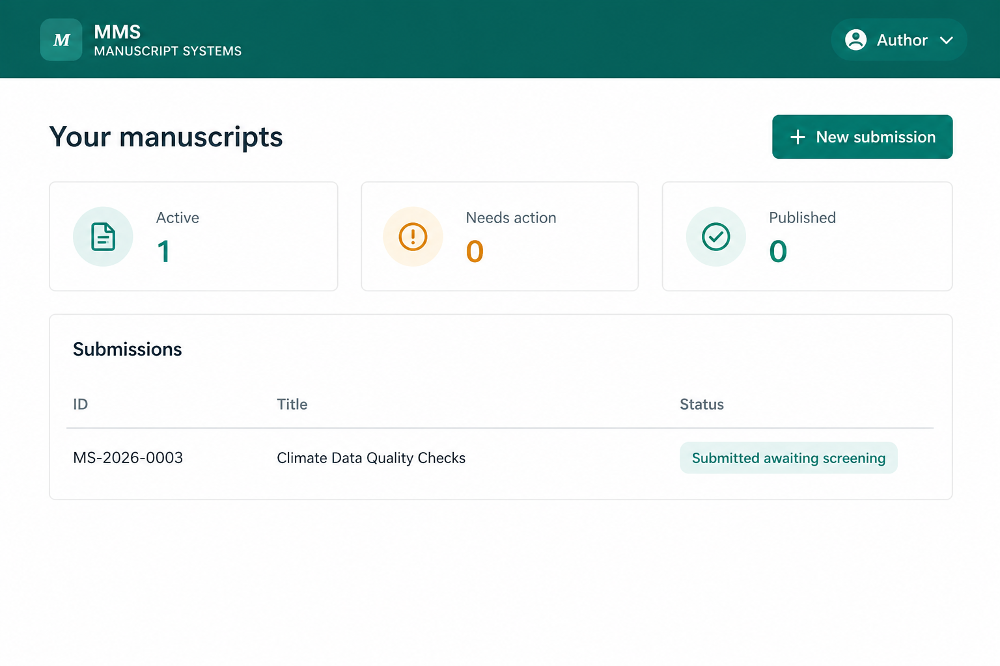
Figure 4 — Author dashboard: list of your manuscripts
Clicking New submission opens a guided form. You choose the
journal, enter the title and abstract, add co-authors, upload the manuscript
file (and optional figures), then submit.
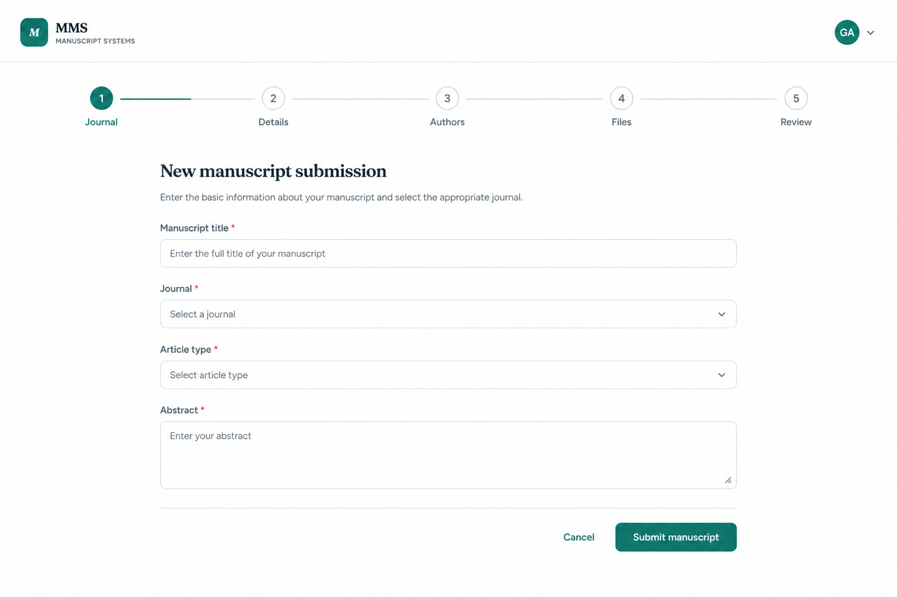
Figure 5 — New submission form
What happens next? The paper status becomes
Submitted — awaiting screening. No further author action is needed
until the editor replies.
5. Editor screens the paper
The Editor opens the Editorial queue. New papers appear under
Awaiting screening. This is a quick quality check before peer review.
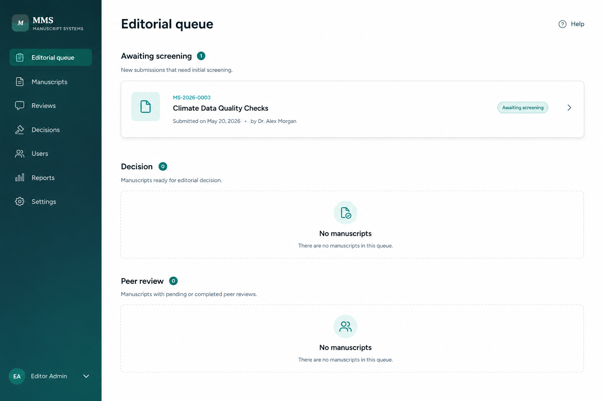
Figure 6 — Editorial queue with papers waiting for screening
On the manuscript page the editor completes a checklist and chooses one action:
Pass screening — the paper moves to peer review (same editor can invite reviewers).
Request formatting fix — the author must correct format issues and re-upload.
Desk reject — the paper is declined without peer review (reason is shown to the author).
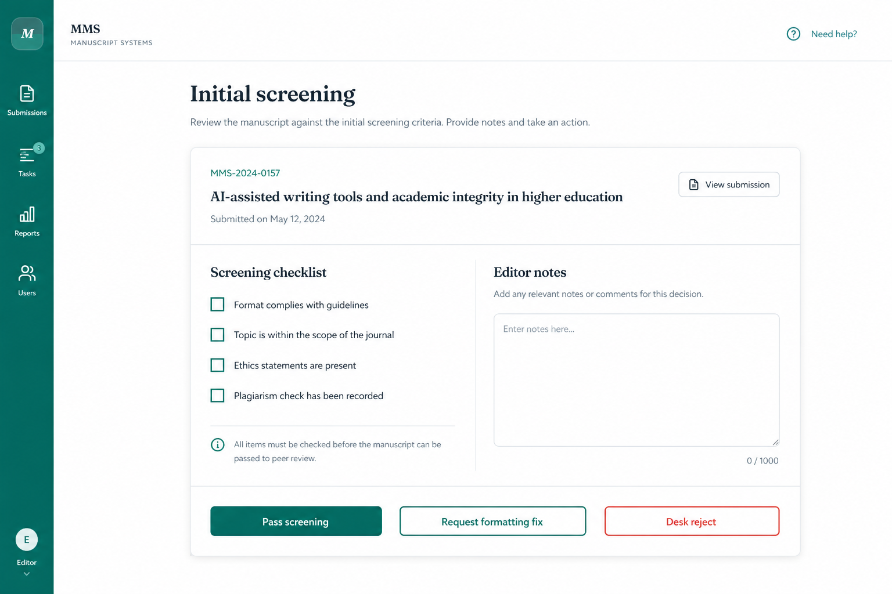
Figure 7 — Initial screening checklist and actions
6. Editor invites reviewers
After a paper passes screening, the editor invites registered reviewers.
Each invitation has a deadline. Reviewers see the invite when they sign in
to their own Reviewer account.
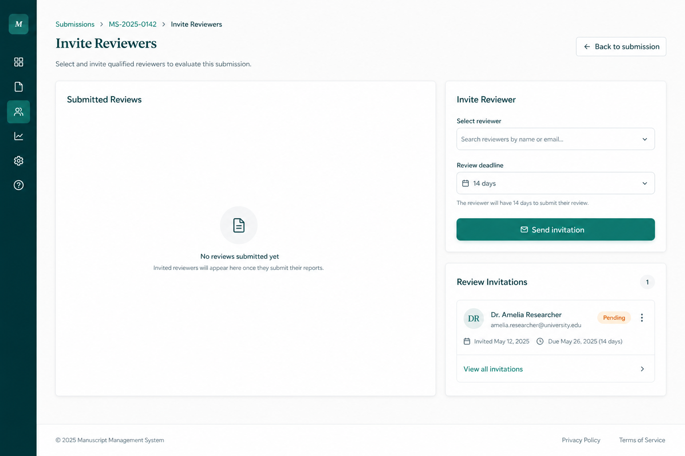
Figure 8 — Invite reviewers and track invitation status
7. Reviewers send their reports
A reviewer opens Invitations, accepts the invite, then fills
in a structured report: summary, strengths, weaknesses, comments to the author,
confidential comments to the editor, and a recommendation
(Accept / Minor revision / Major revision / Reject).
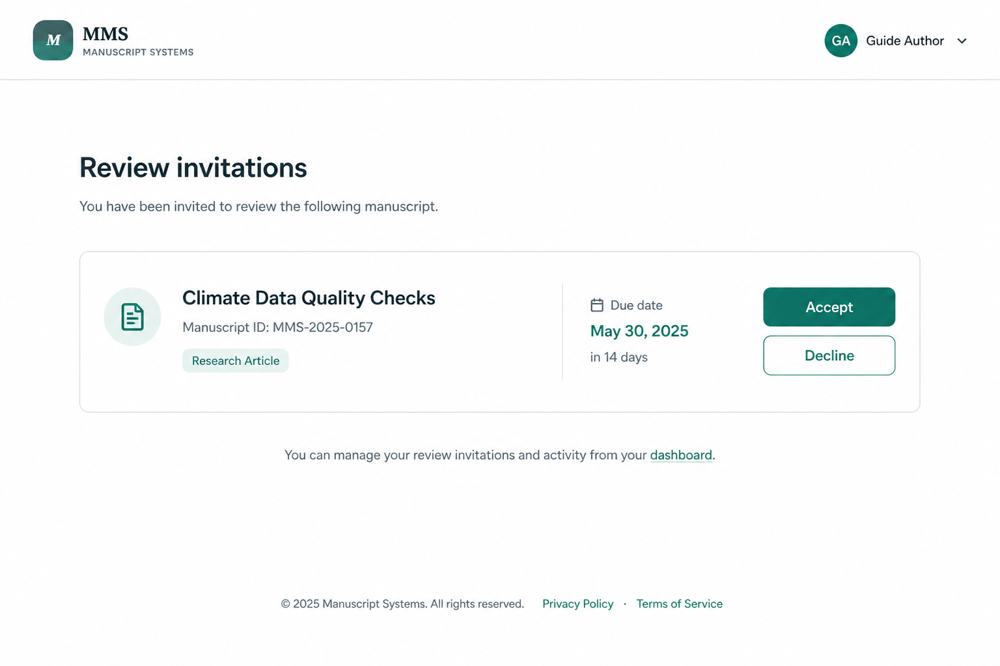
Figure 9 — Reviewer sees pending invitations
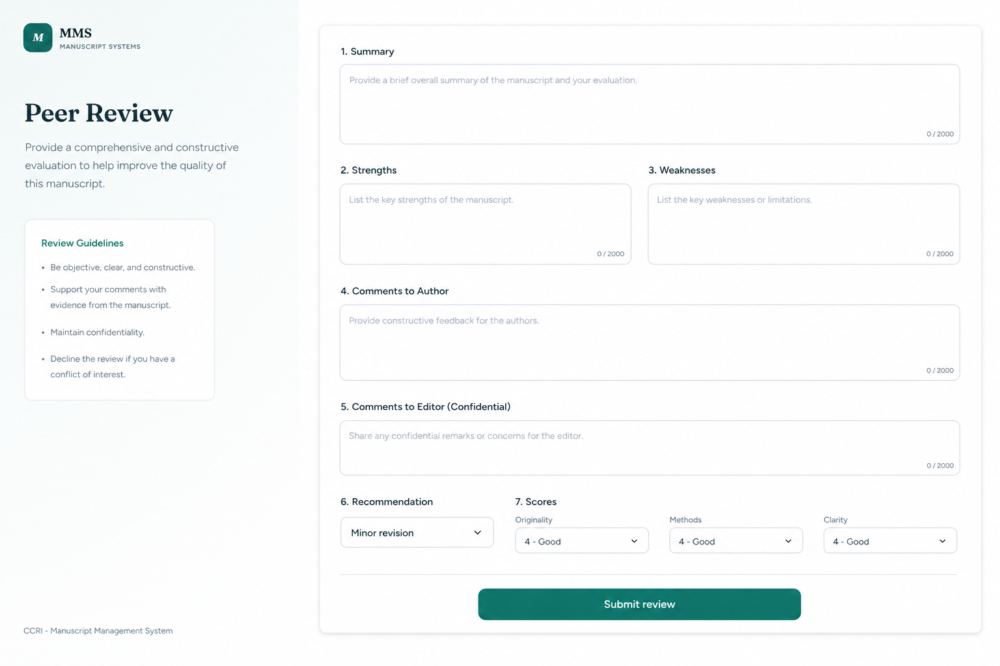
Figure 10 — Review report form
Privacy note: Comments marked “to editor” stay private.
Authors only see reviewer comments after the editor records a decision
(and reviewer names are shown as Reviewer 1, Reviewer 2, …).
8. Editor makes a decision
When reviews arrive, the editor reads the full reports (including confidential
notes) and records a decision with a letter to the author.
Accept — paper goes to Production.
Minor / Major revision — author must revise and reply.
Reject — process ends; author can still read the feedback.
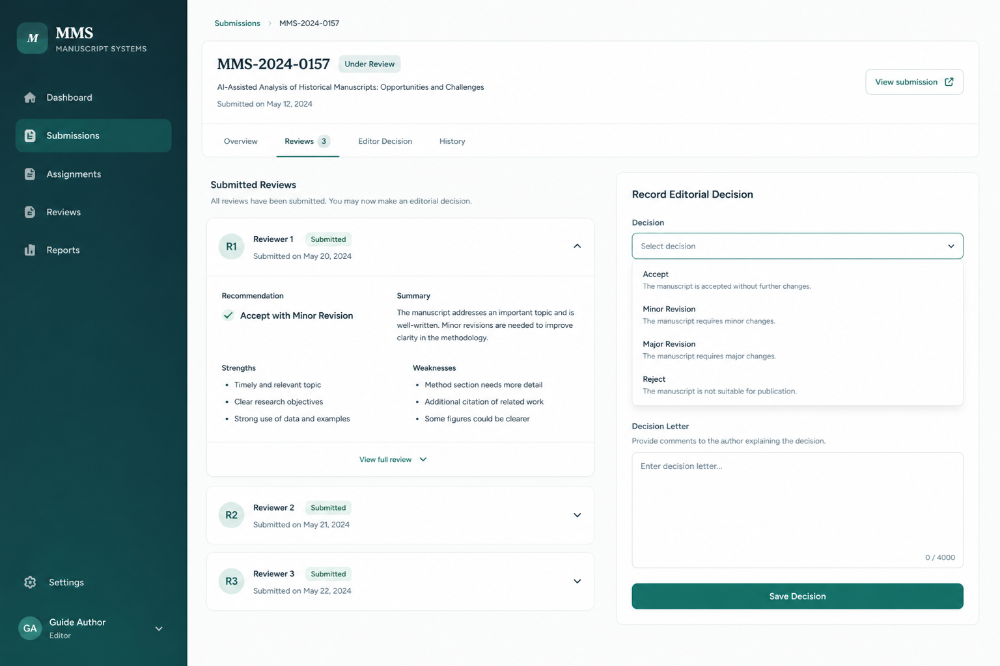
Figure 11 — Submitted reviews and Record decision panel
9. Author responds or revises
If revision is requested, the author opens the manuscript, reads the editor
letter and reviewer comments, then uploads a revised file and a response letter.
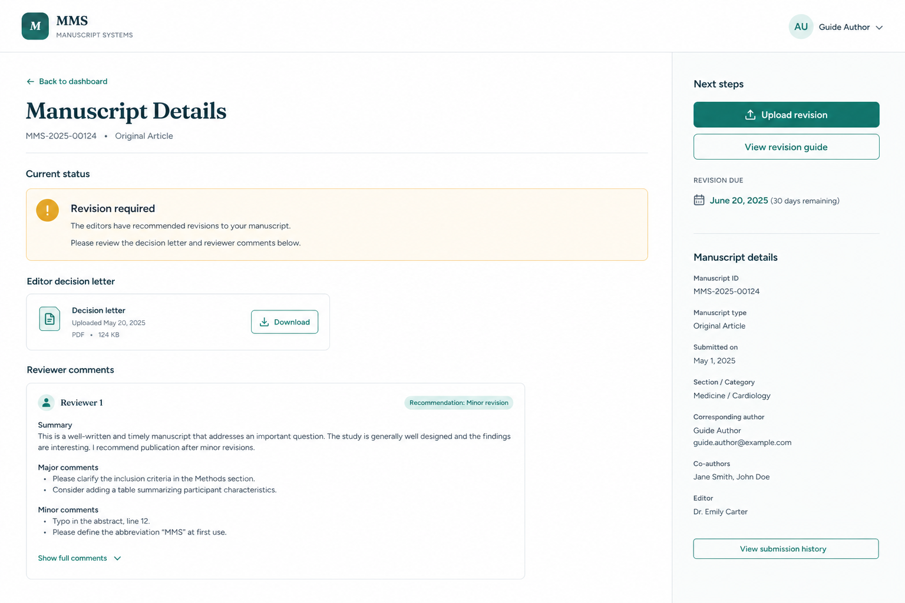
Figure 12 — Author view with decision letter and reviewer comments
After re-submission, the editor (and often the same reviewers) continue the
process until a final Accept or Reject.
10. Production prepares the final article
Accepted papers appear in the Production queue. Production staff
prepare a proof, send it to the author for approval, then publish and assign a DOI.
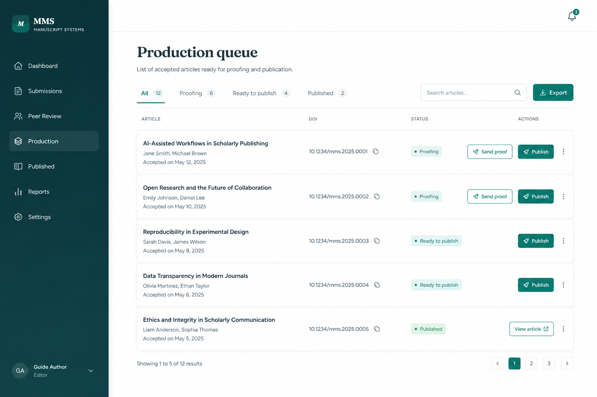
Figure 13 — Production queue for accepted manuscripts
Quick reference — statuses you may see
Draft — saved but not submitted
Submitted — waiting for editor screening
Formatting revision requested — fix format, then re-upload
Under peer review — reviewers are working
Revision required — author must revise
Accepted — moving to production
Proof ready — author should review the proof
Published — article is live (often with a DOI)
Rejected — declined (desk or after review)
One sentence summary:
Authors submit → Editors screen and invite reviewers → Reviewers advise →
Editors decide → Authors revise if needed → Production publishes.
Document: MMS Workflow Guide · Figures 2–3 are live screenshots from the MMS
website; Figures 1 and 4–13 are branded UI illustrations matching the same
product screens for print clarity. Open
MMS-Workflow-Guide.html in a browser, or use the generated PDF.